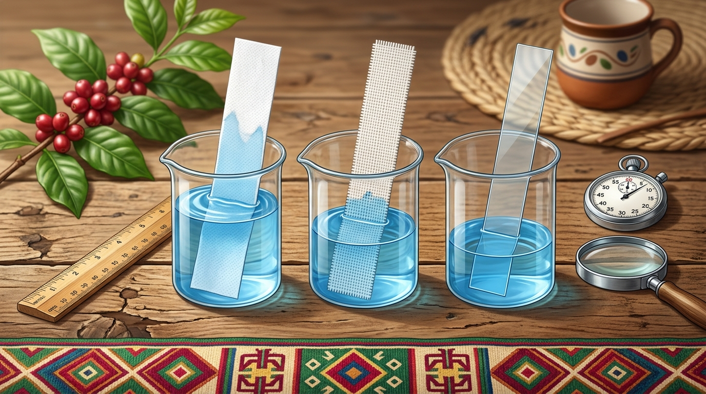
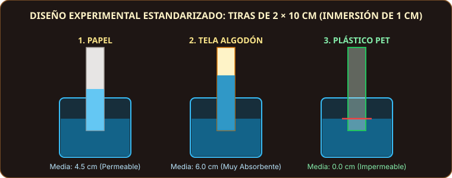

Módulo 2: Laboratorio de Materiales, Ascenso Capilar y Prototipado
Ponemos a prueba los materiales que nuestras familias mencionaron en casa (papel, tela y plástico) mediante un experimento controlado de capilaridad e impermeabilidad, calculamos promedios estadísticos ($\bar{x}$) y construimos una cubierta protectora y una trampa ecológica contra el vector.

Fundamentación Físico-Matemática: Ley de Ascenso Capilar y Media Aritmética
Para decidir científicamente qué material protege mejor los tanques y canecas de agua contra la entrada y oviposición de Aedes aegypti, estandarizamos tres tiras rectangulares de $2 \times 10\text{ cm}$ (papel absorbente, tela de algodón/costal y plástico polimérico) y sumergimos exactamente $1\text{ cm}$ de su extremo inferior en vasos con agua al mismo nivel.
Física del Ascenso Capilar (Ley de Jurin y Washburn)
En materiales fibrosos e hidrofílicos como la celulosa del papel y los hilos de la tela, las fuerzas de adhesión entre el agua y los microporos superan la cohesión interna del líquido, impulsando una columna de humedad de altura $h(t)$:
$$h_{\max} = \frac{2 \gamma \cos\theta}{\rho g r} \qquad \text{y} \qquad h(t) \approx \sqrt{D_{\text{cap}} \cdot t}$$En cambio, el plástico (polietileno/polipropileno) carece de poros intercomunicados y presenta un ángulo de contacto hidrofóbico ($\theta > 90^\circ$), resultando en absorción nula ($h = 0.0\text{ cm}$).
Estadística Experimental: La Media Aritmética ($\bar{x}$)
Para reducir el error humano de lectura con la regla, cada grupo en Tonga realiza $n = 3$ mediciones repetidas ($x_1, x_2, x_3$) por cada material y calcula su promedio o media aritmética:
$$\bar{x} = \frac{1}{n}\sum_{i=1}^{n} x_i = \frac{x_1 + x_2 + x_3}{3}$$Con los datos de referencia del prototipo Excel: $\bar{x}_{\text{papel}} = \frac{4.5 + 5.0 + 4.0}{3} = 4.50\text{ cm}$, $\bar{x}_{\text{tela}} = \frac{6.0 + 6.5 + 5.5}{3} = 6.00\text{ cm}$ y $\bar{x}_{\text{plástico}} = \frac{0.0 + 0.0 + 0.0}{3} = 0.00\text{ cm}$.

Metáfora Conceptual: La Jigra Nasa, el Costal Cafetero y la Lona Impermeable
¿Por qué algunas familias tapan sus canecas con una tela o un costal pensando que eso basta? Nuestro diálogo de saberes conecta los objetos cotidianos del Cauca con la física de materiales:
La Jigra Tejida y el Porcentaje de Poro
La jigra cabuyera Nasa es maravillosa para cargar cosecha porque respira y deja pasar el aire. Pero sobre un tanque de agua, los espacios entre fibras dejan entrar a la hembra de Aedes aegypti (que mide apenas $4\text{ a }7\text{ mm}$) y mantienen húmedo el borde.
El Costal de Fique y la Tela
Al igual que la tira de tela en el laboratorio ($\bar{x} = 6.00\text{ cm}$), una tela sobre la alberca absorbe agua por capilaridad, se deteriora rápido y crea un microclima húmedo ideal para que los huevos del mosquito sobrevivan pegados a la pared.
El Polímero Impermeable en Tonga
El plástico limpio o lona impermeable reutilizada ($\bar{x} = 0.00\text{ cm}$), bien amarrada con neumático o cuerda al cuello de la caneca, actúa como una barrera física total y duradera.
Laboratorio Interactivo 2D, Hoja de Registro DUA y Constructor de Trampas
A. Simulador Físico 2D de Inmersión y Capilaridad
Elige entre el Protocolo Rápido de la Tonga en Excel ($30\text{ s}$) o el Protocolo Extendido de Aula en PDF ($120\text{ s}$). Activa el modo de Regla Táctil de Alto Contraste DUA (con relieves simulados cada centímetro para estudiantes con baja visión) y observa el ascenso capilar en vivo:
B. Hoja de Registro Experimental DUA en Vivo (Convención Cromática del Excel)
Siguiendo el sistema de apoyos visuales de la plantilla Excel (1_Registro_Experimental): escribe tus mediciones en las celdas azules de entrada y observa cómo las celdas verdes protegidas calculan automáticamente la media aritmética $\bar{x} = \frac{x_1+x_2+x_3}{3}$:
| Material Evaluado ($2 \times 10\text{ cm}$) | Medición $x_1$ ($\text{cm}$) [Celda Azul DUA] |
Medición $x_2$ ($\text{cm}$) [Celda Azul DUA] |
Medición $x_3$ ($\text{cm}$) [Celda Azul DUA] |
Promedio $\bar{x}$ ($\text{cm}$) [Fórmula Verde] |
Conclusión de Impermeabilidad |
|---|---|---|---|---|---|
| 1. Papel Absorbente | 4.50 cm | Alta absorción y baja resistencia húmeda (No apto para tapar tanques) | |||
| 2. Tela / Costal | 6.00 cm | Máxima capilaridad por fibras (Retiene humedad y permite paso si se destensa) | |||
| 3. Plástico Polimérico | 0.00 cm | 100% Impermeable (Óptimo para cubierta protectora de recipientes) | |||
| Promedio General del Ensayo de Laboratorio ($\bar{X}_{\text{global}}$): | 3.50 cm | Referencia de validación estadística del grupo | |||
C. Juego Constructor de Cubierta Protectora y Ovitrampa Casera
Aplica tus resultados del laboratorio para diseñar la solución de ingeniería que llevaremos a las viviendas de Guachené y La Unión del Salado:
Excelente decisión de ingeniería: el plástico impermeable ($\bar{x} = 0.00\text{ cm}$) sellado con banda elástica de neumático impide el ingreso de la hembra de Aedes aegypti y evita que el agua lluvia forme charcos por capilaridad.
Secuencia de las 7 Operaciones Intelectuales y Diferenciación Multigrado
El laboratorio de $120\text{ minutos}$ articula de manera explícita las 7 operaciones intelectuales del ciclo de indagación STEM+A y adapta la complejidad matemática desde $1.^\circ$ hasta $5.^\circ$ de primaria:
| Grado Escolar | Meta en Medición y Estadística | Andamiaje DUA en el Laboratorio |
|---|---|---|
| Grados $1.^\circ$ y $2.^\circ$ | Comparación cualitativa y conteo directo en centímetros enteros con regleta coloreada. | Pictogramas de gota de agua, cinta métrica táctil y clasificación visual del material ganador. |
| Grado $3.^\circ$ | Registro de las $3$ mediciones en tabla estructurada y suma de longitudes con apoyo de calculadora o ábaco. | Tabla DUA con código de colores (azul para anotar, verde para el resultado grupal). |
| Grados $4.^\circ$ y $5.^\circ$ | Medición con decimales ($\text{mm}$), cálculo autónomo de la media aritmética $\bar{x} = \frac{x_1+x_2+x_3}{3}$ y gráfica de barras. | Análisis de fuentes de error experimental y justificación física de la impermeabilidad del polímero. |
Protocolo Imprimible y Libro de Excel DUA del Proyecto
Descarga los instrumentos oficiales de la Sesión 2 para trabajar en el aula con o sin conectividad a internet:
Guía 02: Protocolo de Laboratorio
Cartilla paso a paso con lista de materiales económicos, instrucciones de seguridad, tabla de registro en blanco e instructivo ilustrado para armar la cubierta y la trampa casera.
Descargar Guía 02 (PDF)Prototipo de Planeación UDL + Excel
Libro original de Excel con las 6 hojas interactivas del proyecto (TOC_y_Sintesis, 1_Registro_Experimental, 2_Rubrica_Evaluacion, 3_Bitacora_Familiar, 4_Guia_Didactica y 5_Validacion_Fidelidad).
Descargar Libro Excel DUA (.xlsx)Autoevaluación Científica y Técnica de la Sesión 2
Criterio: Medición y Datos
Mido con cuidado el ascenso del agua en las tiras de $2 \times 10\text{ cm}$ (usando regla visual o regla táctil DUA) y registro los tres ensayos sin alterar la evidencia.
Criterio: Conclusión Basada en Pruebas
Demuestro con los promedios ($\bar{x}_{\text{plástico}} = 0.00\text{ cm}$ frente a $\bar{x}_{\text{tela}} = 6.00\text{ cm}$) por qué un material impermeable y bien sellado es indispensable para tapar el agua.
Criterio: Trabajo en Tonga
Cumplo mi rol dentro del equipo de laboratorio (cronometrista, medidor, relator o constructor del prototipo) respetando el ritmo de todos mis compañeros.